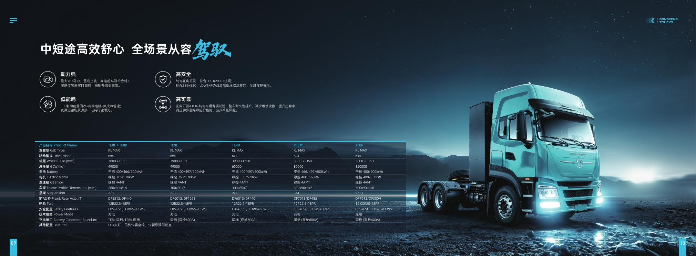

Route study
Mileage, grade, temperature and charging windows.
BUILT SINCE 1969
Dongfeng's new-energy commercial vehicle portfolio brings battery-electric drive to port, logistics, construction, mining and municipal operations.

GLOBAL FOUNDATION
According to the supplied catalogue (data through December 2025), Dongfeng was founded in 1969, has delivered more than 63 million vehicles, serves over 60 countries and regions, and supports overseas operations through 10 parts warehouses, 10 service centres and more than 200 sales and service staff.
PROJECT METHOD
Mileage, grade, temperature and charging windows.
GVW/GCW, battery, drive, axle and body.
Driving side, interface and homologation requirements.
Production, documents, shipping and parts.
Send your operating conditions for a model recommendation.